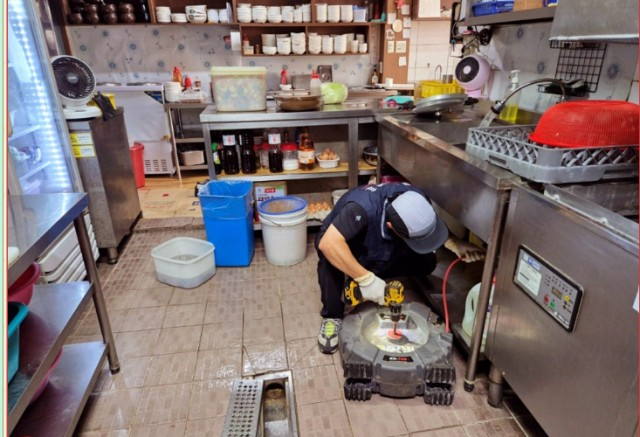
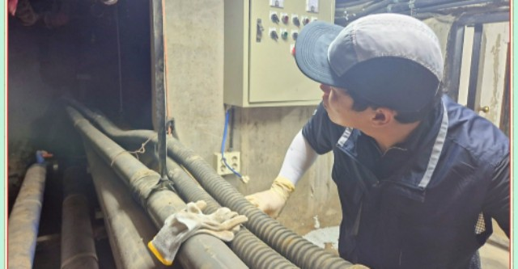
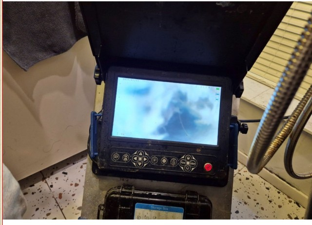

기름·음식물 슬러지로 인한 역류부터 바닥 누수까지. 석션기로 1차 제거 후 내시경으로 위치 확인, 플렉스 샤프트로 정밀 세척합니다.
가정집보다 음식점·기숙사처럼 여러 명이 함께 쓰는 공간일수록 원인이 복합적입니다.
기름이 굳어 P트랩과 배관 벽면에 쌓이면서 배수 공간이 점점 좁아집니다.
샴푸실·다인 시설은 머리카락과 섬유질이 엉켜 물 흐름을 방해하는 경우가 많습니다.
아파트 등은 싱크대 하부 접근만으로 부족해 아래층 천장을 통해 접근해야 하는 경우도 있습니다.
막힘·역류 상태를 먼저 살펴보고 접근 방법을 정합니다.
고여있는 물과 찌꺼기를 석션기로 먼저 흡입합니다.
배관 내시경으로 막힌 위치와 원인을 정확히 확인합니다.
회전축과 헤드로 배관 내부에 쌓인 이물질을 분쇄·제거합니다.
물을 흘려보내 최종 점검 후 결과를 직접 보여드립니다.
안성 공도 · 역류 반복되던 주방 싱크대, 석션기로 1차 제거 후 내시경으로 위치 확인, 플렉스 샤프트로 정밀 세척 후 통수 테스트까지 완료

P트랩 해체 → 메인배관 고압세척평택 고덕 · 기름 찌꺼기로 굳은 P트랩 해체·청소, 잡배수관 정리, 메인배관 고압세척까지 근본 원인 제거

내시경 → P트랩 분리 → 전동샤프트평택 비전동 · 여러 명이 함께 쓰는 기숙사 특성상 기름·음식물·머리카락이 복합적으로 쌓인 막힘을 완전 제거

내시경 진단 → 전동샤프트평택 비전동 · 손님을 못 받을 정도로 역류하던 샴푸실, 내시경으로 정확한 막힘 위치를 찾아 완전히 제거
영업 마감 후 60도 이상 뜨거운 물을 한 번씩 흘려보내면 배관 벽면에 기름이 굳기 전에 씻겨 내려갑니다. 기름은 절대 싱크대에 직접 버리지 마시고 전용 통에 모아 폐기해 주세요. 가정에서는 베이킹소다와 식초를 매달 한두 번 활용해 배수구를 청소해 주시면 도움이 됩니다.
유연한 금속 케이블 끝에 회전식 청소 헤드를 달아 배수구 안쪽 깊숙이 넣고 고속으로 회전시켜 찌꺼기를 제거하는 방식입니다. 카메라와 함께 사용해 막힌 위치를 실시간으로 확인하며 작업하고, 고압수 방식보다 배관 손상이 적고 물 사용량도 적습니다.